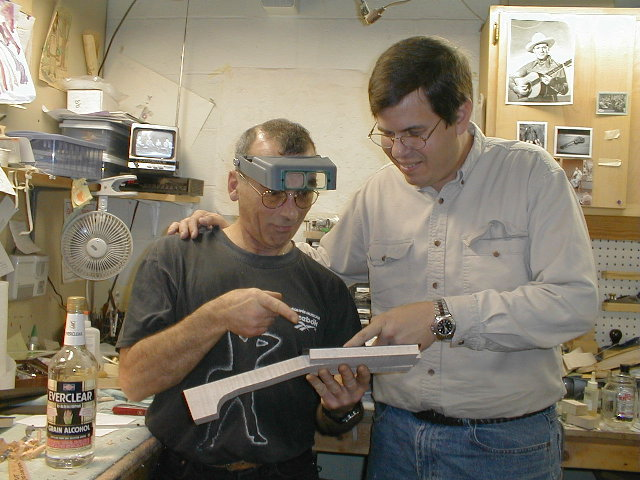

←
12345678910111213
→
Neck and Fingerboard.
- 80) Here you can see the truss rod slot has been cut on the table saw and the truss rod is laying on the neck. The ears have been glued to the peghead.
- 81) Placement of the truss rod is critical. I've marked the location where the washer will rest against a shoulder in the truss rod pocket of the headstock.
- 82) The rod is in and the maple filler piece is ready to glue in.
- 83) Once the excess is trimmed from the truss rod filler, the ebony peghead veneer is thicknessed and located. A couple of small holes are drilled with the Dremel tool so pins can be inserted to keep it from slipping once the glue and clamps are applied.
- 84) More visitors. My good friend, vintage instrument dealer, and mandolinist extraordinaire, Larry Wexer (on the left), long time friend Randy (in the middle), and "not so little" ol' me on the right.

- 85) Time to start making fingerboards. Ebony blanks are selected and the template outline is marked on them. The blanks are then band sawed to approximate size.
- 86) The template is attached to the ebony using double stick tape and it is template routed to shape. On occasion, I get one flipped over the wrong way and end up with a left handed board. Anyone need a couple?!
- 87) The boards are slotted using a special blade and a plastic template on the table saw.
- 88) Binding is glued in place with cyanoacrylate. A heat gun is used to soften the binding and work it around the curves.
- 89) Once the binding is in place, a radiused block (here, a 14" radius), is used to contour the fingerboard.
- 90) Mother of pearl dots are "turned" on the drill press by gluing them to a dowel, then grinding them with a Dremel tool while the drill press is running. Doesn't take long to make perfect dots this way. Chris' mandolin will not have dots in the fingerboard or the side of the neck. He said violinists don't have them, and they may be a bit restrictive to his style.
- 91) The fingerboard extension is scalloped (to help eliminate pick noise). I cut the slots in that area a bit deeper and use some 0.020" white plastic inserts to mimic the frets that aren't there. Looks better than just plain black to me.
- 92) The extension is scalloped in the drill press using a sanding drum and a block of wood clamped to the table.
- 
- 93) Sam Gifford, maker of the fine Pegasus mandolin cases stopped by for a visit after IBMA. Sam is showing me some of the finer points of building (note the bottle near his elbow)! JUST KIDDING SAM! Chris has a brand new Pegasus case, white exterior, plaid interior for the new mandolin.
←
12345678910111213
→
© Lynn Dudenbostel, 2002.